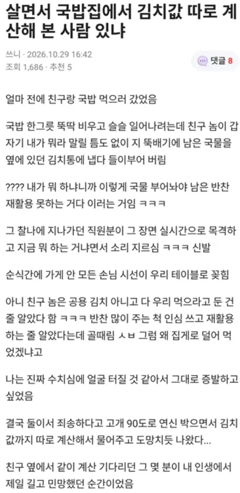

그래도 유명한거보면 줜나 맛있나보네
부모님이 없어서 알려줄 사람이 없었나보네
ㄹㅇ
진짜 김치통 들어서 머리에 부어주고싶네
대가리에 우동사리 넣고 다니냐고...ㄷㄷ
못 배워쳐먹은 것에는 하한선이 없구나..
미친 가게인줄 알았는데 미친새끼였네 ㅋㅋ
애미애비가 없나
멍청한데 성격도 더러운새끼
그래도 잘못을 인지함 + 사과함 + 정상인 친구 있음이니 그나마
그래도 사과했네 ㅋㅋㅋㅋㅋ
주작일가능성이 농후
20살 때 밥 먹고 나서 설거지하기 힘들게 다른 접시로 꾹 누르던 놈 생각나네 ㅋㅋ
철이 없었던 것 같은데
무식한사람이 신념을 가지면 무섭다의 표본
저정도가지고 직원이 소리를지름??
김치통이래봤자 한 4~5번 풀수있게 소분되어있는건데
실제로 다 먹는사람도 꽤 있는데
그거가지고 돈을 더내고 왔다는것도 이상한데 ㅋㅋ
밥에다 담배꽁초 꼽아두면 단돈 천원
그래도 국민정서상 태형임
니가 장사할 때에도 저 상황에 똑같은 생각을 하길 바라
상황이 이상해서 주작일 가능성이 농후하다는건데
왜이리 공격적이지?
저 썰이 주작인지 아닌지는 모르겠지만, 너가 말한거에 문제점을 못 느낀다면 나도 너한테 설명 할 자신이 없다 ㅇㅇ..
뭐지 이 병신은? 내가 저렇게 하는게 이상이 없다고 한것도 아닌데
그런 상황이 벌어졌다고 친다고 하더라도
주변 반응이 이상하다고 한게 문제점이 있다고?
ㅋㅋㅋ
니가 한 말: "저정도가지고" 직원이 소리를지름??
애초에 니 판단부터가 지극히 블랜컨슈머다운 판단이라서
내가 직원이었으면 소리질렀을 것 같은데
음?
얘는 맨날 이러고 다니더라 ㅋㅋ
주작감별기 납셨노ㅋㅋㅋ 역하다 진짜
지 기준 못겪어본건 다 주작이라는 편협한 사고방식
근데 본인은 똑똑한걸로 착각함ㅋㅋㅋ
에휴ㅋㅋㅋ
예전에 어떤 형님이랑 한정식집 갔는데 그 형님도 다먹고 나갈때 반찬에 막 물붓고 재활용못하게 섞어놓더라ㅋㅋ그거까진 상관없었는데 그릇에 침뱉는거보고 미친놈인가 싶었음ㅋ
주작이겠지..
인성이 글러먹은새끼임
주위에 두면 그피해가 나한테까지 올수있으니 거리를 두거나 손절 쳐야함
안산에 유명한 국밥집은 10년 전에도 깍두기 값 따로 받았음 ㅋㅋ